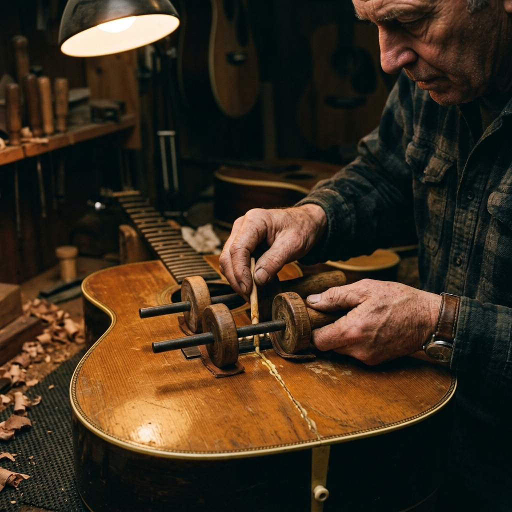
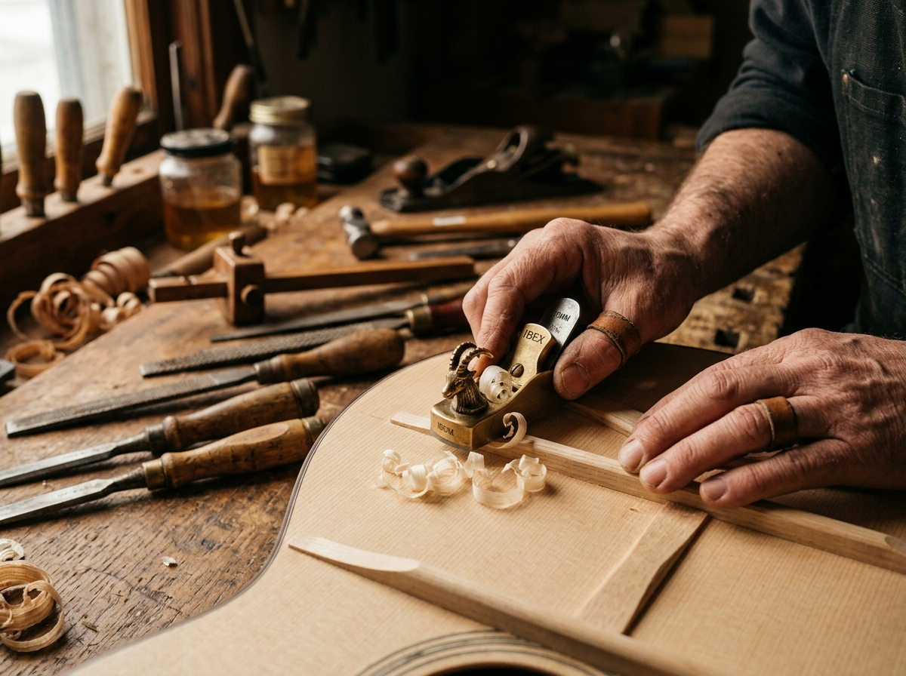
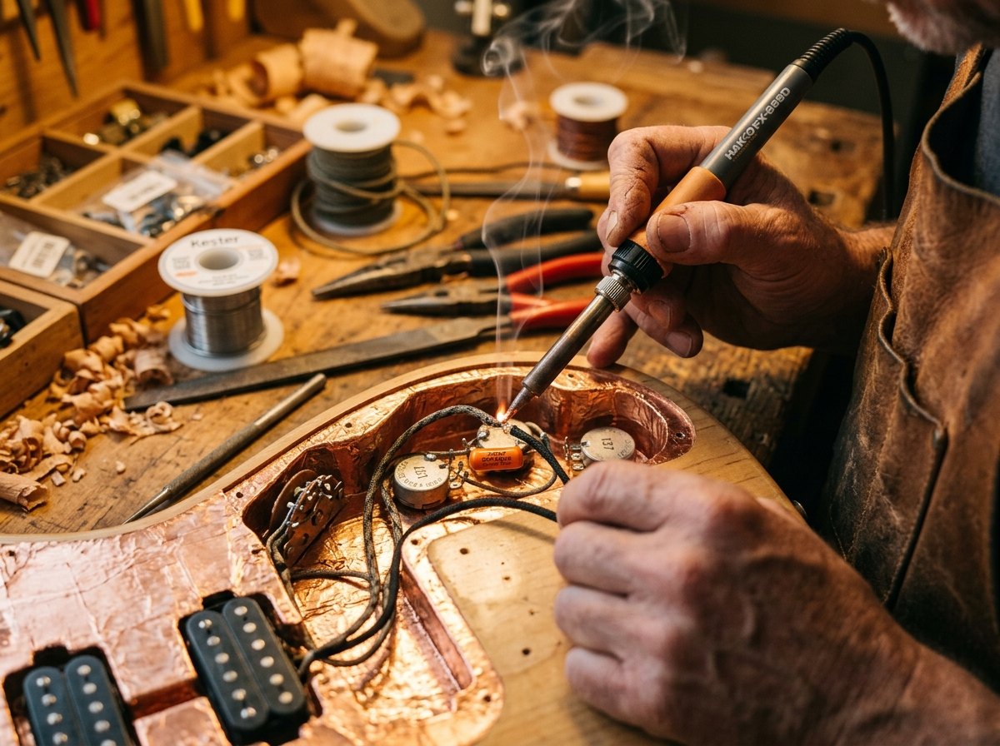
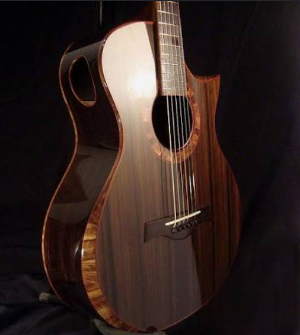
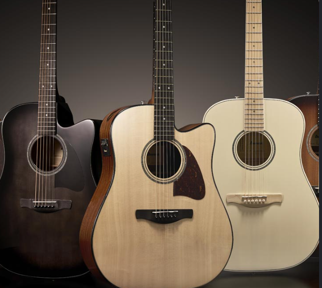
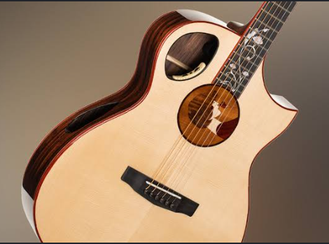
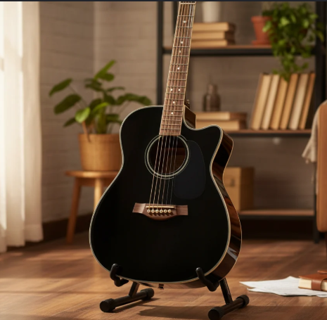

Visual Service Architecture
Every procedure performed on our bench is documented with photography and conducted under strict museum conservation ethics.

Full Vintage & Historic Reconstruction
For pre-war acoustics, vintage Martins, and Gibsons that have suffered flood damage, extensive soundboard fracture, or severe neck misalignments. We stabilize structure without stripping historical patina.
Master Setup & Intonation
Truss rod relief calibrated under true tension, nut slots dialed to 0.001" clearance, and compensated bone saddles carved for spot-on intonation across the neck.
Fret Leveling, Recrowning & Refrets
Eliminating fret buzz, flat spots, and chokeouts. Precision leveling with diamond files, micro-beveled fret ends, mirror polish, or complete Jescar stainless steel refrets.

Crack & Scalloped Brace Repair
Stabilizing top cracks with diamond grain-aligned spruce cleats, re-gluing loose internal tone bars, and correcting acoustic soundboard bellying.

Custom Electronics & Shielding
Silent copper foil cavity shielding, hand-soldered vintage cloth harnesses, CTS mil-spec potentiometers, Orange Drop tone caps, and custom coil splits.
French Polish & Nitro Drop-Fills
Traditional hand-rubbed shellac French polishing, drop-filling dings, and localized nitrocellulose overspray blending to protect raw wood from sweat.
Where Does Your Instrument Need Care?
Click on any anatomical hotspot on the workbench instrument to inspect common structural issues, bench solutions, and turnaround windows.

Headstock Splines & Bone Nut Carving
Cracks along the mahogany grain behind the nut or broken tuner screw anchors. We mill concealed maple splines for 300% tensile strength and carve compensated unbleached bone nuts.
- Hairline tuning post crack or complete fracture
- Open string pinging or slipping out of tune
- Choked 1st-fret action or string buzz
The Proof of Handcraft
Interactive before & after inspection: historical conservation of irreplaceable vintage instruments with total acoustic and structural fidelity.
1962 Gibson J-45 Complete Soundboard & Neck Reconstruction
Adirondack Spruce Top · Old-Growth Mahogany Back & Sides · Brazilian Rosewood Fingerboard
 Before Restoration
After Restoration
Before Restoration
After Restoration
Three 8-inch spruce grain splits, collapsed maple bridge plate, dried glue failure, and forward neck pitch angle drop.
Aged Adirondack diamond cleats in 192g hide glue, steam neck dismount, reshaped dovetail joint, and spot-matched lacquer blend.
94% original vintage finish preserved intact. Perfect 5/64" low action restored across all 20 frets with concert-grade projection.

1934 Parlor Re-Hydration
Controlled RH chamber humidification, re-bracing delaminated soundboard, and stabilizing Brazilian rosewood back.
1971 Custom Peghead Repair
Concealed twin hard rock maple internal splines with color-matched vintage sunburst lacquer blend. 300% tensile strength restored.

1964 Solidbody Reconditioning
Jescar vintage wire refret, ultrasonic hardware cleaning, and copper shielding cavity without pickup potting loss.
The Bench Workflow
Every instrument undergoes our verified 4-stage surgical process from intake inspection to concert delivery.

Internal Inspection
Dental mirror and endoscopic camera inspection of soundboard braces, bridge plate wear, and neck angle geometry.
Hide Glue Stabilization
Re-cleating fractures and clamping loose tone bars with 145°F hot hide glue for 100% reversible structural integrity.
Surgical Fretwork
Precision fingerboard leveling, crowning wire with diamond abrasives, and hand-buffing fret crowns to mirror finish.
Voicing & Concert Setup
Settling under true string tension, strobe intonation tuning, action calibration, and comprehensive photographic report.
Bench Guarantees
We treat every instrument with the same veneration as an 18th-century Stradivarius violin.
Lifetime Warranty
Every glue seam, neck reset, and cleat we install is covered by our lifetime structural warranty.
Years of Experience
Generational knowledge spanning classical guitars, pre-war acoustics, and modern custom multi-scales.
Documented Repair
We use historical hide glue and non-destructive conservation practices that safeguard instrument value.
Certified Specialists
Master luthiers certified in historical hide glue conservation and precision PLEK-level fret leveling.